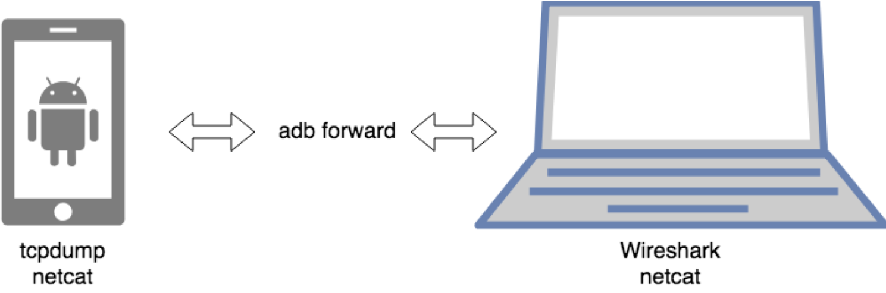
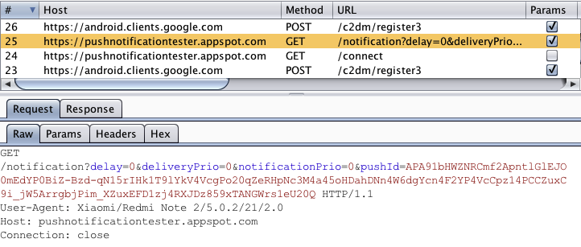

Android Basic Security Testing¶
In the previous chapter, we provided an overview of the Android platform and described the structure of its apps. In this chapter, we'll talk about setting up a security testing environment and introduce basic processes and techniques you can use to test Android apps for security flaws. These basic processes are the foundation for the test cases outlined in the following chapters.
Android Testing Setup¶
You can set up a fully functioning test environment on almost any machine running Windows, Linux, or macOS.
Host Device¶
At the very least, you'll need Android Studio (which comes with the Android SDK) platform tools, an emulator, and an app to manage the various SDK versions and framework components. Android Studio also comes with an Android Virtual Device (AVD) Manager application for creating emulator images. Make sure that the newest SDK tools and platform tools packages are installed on your system.
In addition, you may want to complete your host setup by installing the Android NDK if you're planning to work with apps containing native libraries (it will be also relevant in the chapter "Tampering and Reverse Engineering on Android").
Sometimes it can be useful to display or control devices from the computer. To achieve this, you can use Scrcpy.
Testing Device¶
For dynamic analysis, you'll need an Android device to run the target app on. In principle, you can test without a real Android device and use only the emulator. However, apps execute quite slowly on a emulator, and simulators may not give realistic results. Testing on a real device makes for a smoother process and a more realistic environment. On the other hand, emulators allow you to easily change SDK versions or create multiple devices. A full overview of the pros and cons of each approach is listed in the table below.
| Property | Physical | Emulator/Simulator |
|---|---|---|
| Ability to restore | Softbricks are always possible, but new firmware can typically still be flashed. Hardbricks are very rare. | Emulators can crash or become corrupt, but a new one can be created or a snapshot can be restored. |
| Reset | Can be restored to factory settings or reflashed. | Emulators can be deleted and recreated. |
| Snapshots | Not possible. | Supported, great for malware analysis. |
| Speed | Much faster than emulators. | Typically slow, but improvements are being made. |
| Cost | Typically start at $200 for a usable device. You may require different devices, such as one with or without a biometric sensor. | Both free and commercial solutions exist. |
| Ease of rooting | Highly dependent on the device. | Typically rooted by default. |
| Ease of emulator detection | It's not an emulator, so emulator checks are not applicable. | Many artefacts will exist, making it easy to detect that the app is running in an emulator. |
| Ease of root detection | Easier to hide root, as many root detection algorithms check for emulator properties. With Magisk Systemless root it's nearly impossible to detect. | Emulators will almost always trigger root detection algorithms due to the fact that they are built for testing with many artefacts that can be found. |
| Hardware interaction | Easy interaction through Bluetooth, NFC, 4G, Wi-Fi, biometrics, camera, GPS, gyroscope, ... | Usually fairly limited, with emulated hardware input (e.g. random GPS coordinates) |
| API level support | Depends on the device and the community. Active communities will keep distributing updated versions (e.g. LineageOS), while less popular devices may only receive a few updates. Switching between versions requires flashing the device, a tedious process. | Always supports the latest versions, including beta releases. Emulators containing specific API levels can easily be downloaded and launched. |
| Native library support | Native libraries are usually built for ARM devices, so they will work on a physical device. | Some emulators run on x86 CPUs, so they may not be able to run packaged native libraries. |
| Malware danger | Malware samples can infect a device, but if you can clear out the device storage and flash a clean firmware, thereby restoring it to factory settings, this should not be a problem. Be aware that there are malware samples that try to exploit the USB bridge. | Malware samples can infect an emulator, but the emulator can simply be removed and recreated. It is also possible to create snapshots and compare different snapshots to help in malware analysis. Be aware that there are malware proofs of concept which try to attack the hypervisor. |
Testing on a Real Device¶
Almost any physical device can be used for testing, but there are a few considerations to be made. First, the device needs to be rootable. This is typically either done through an exploit, or through an unlocked bootloader. Exploits are not always available, and the bootloader may be locked permanently, or it may only be unlocked once the carrier contract has been terminated.
The best candidates are flagship Google pixel devices built for developers. These devices typically come with an unlockable bootloader, opensource firmware, kernel, radio available online and official OS source code. The developer communities prefer Google devices as the OS is closest to the android open source project. These devices generally have the longest support windows with 2 years of OS updates and 1 year of security updates after that.
Alternatively, Google's Android One project contains devices that will receive the same support windows (2 years of OS updates, 1 year of security updates) and have near-stock experiences. While it was originally started as a project for low-end devices, the program has evolved to include mid-range and high-end smartphones, many of which are actively supported by the modding community.
Devices that are supported by the LineageOS project are also very good candidates for test devices. They have an active community, easy to follow flashing and rooting instructions and the latest Android versions are typically quickly available as a Lineage installation. LineageOS also continues support for new Android versions long after the OEM has stopped distributing updates.
When working with an Android physical device, you'll want to enable Developer Mode and USB debugging on the device in order to use the ADB debugging interface. Since Android 4.2 (API level 16), the Developer options sub menu in the Settings app is hidden by default. To activate it, tap the Build number section of the About phone view seven times. Note that the build number field's location varies slightly by device. For example, on LG Phones, it is under About phone -> Software information. Once you have done this, Developer options will be shown at bottom of the Settings menu. Once developer options are activated, you can enable debugging with the USB debugging switch.
Testing on an Emulator¶
Multiple emulators exist, once again with their own strengths and weaknesses:
Free emulators:
- Android Virtual Device (AVD) - The official android emulator, distributed with Android Studio.
- Android X86 - An x86 port of the Android code base
Commercial emulators:
- Genymotion - Mature emulator with many features, both as local and cloud-based solution. Free version available for non-commercial use.
- Corellium - Offers custom device virtualization through a cloud-based or on-prem solution.
Although there exist several free Android emulators, we recommend using AVD as it provides enhanced features appropriate for testing your app compared to the others. In the remainder of this guide, we will use the official AVD to perform tests.
AVD supports some hardware emulation, such as GPS, SMS and motion sensors.
You can either start an Android Virtual Device (AVD) by using the AVD Manager in Android Studio or start the AVD manager from the command line with the android command, which is found in the tools directory of the Android SDK:
$ ./android avd
Several tools and VMs that can be used to test an app within an emulator environment are available:
Please also verify the "Testing Tools" chapter at the end of this book.
Getting Privileged Access¶
Rooting (i.e., modifying the OS so that you can run commands as the root user) is recommended for testing on a real device. This gives you full control over the operating system and allows you to bypass restrictions such as app sandboxing. These privileges in turn allow you to use techniques like code injection and function hooking more easily.
Note that rooting is risky, and three main consequences need to be clarified before you proceed. Rooting can have the following negative effects:
- voiding the device warranty (always check the manufacturer's policy before taking any action)
- "bricking" the device, i.e., rendering it inoperable and unusable
- creating additional security risks (because built-in exploit mitigations are often removed)
You should not root a personal device that you store your private information on. We recommend getting a cheap, dedicated test device instead. Many older devices, such as Google's Nexus series, can run the newest Android versions and are perfectly fine for testing.
You need to understand that rooting your device is ultimately YOUR decision and that OWASP shall in no way be held responsible for any damage. If you're uncertain, seek expert advice before starting the rooting process.
Which Mobiles Can Be Rooted¶
Virtually any Android mobile can be rooted. Commercial versions of Android OS (which are Linux OS evolutions at the kernel level) are optimized for the mobile world. Some features have been removed or disabled for these versions, for example, non-privileged users' ability to become the 'root' user (who has elevated privileges). Rooting a phone means allowing users to become the root user, e.g., adding a standard Linux executable called su, which is used to change to another user account.
To root a mobile device, first unlock its boot loader. The unlocking procedure depends on the device manufacturer. However, for practical reasons, rooting some mobile devices is more popular than rooting others, particularly when it comes to security testing: devices created by Google and manufactured by companies like Samsung, LG, and Motorola are among the most popular, particularly because they are used by many developers. The device warranty is not nullified when the boot loader is unlocked and Google provides many tools to support the root itself. A curated list of guides for rooting all major brand devices is posted on the XDA forums.
Rooting with Magisk¶
Magisk ("Magic Mask") is one way to root your Android device. It's specialty lies in the way the modifications on the system are performed. While other rooting tools alter the actual data on the system partition, Magisk does not (which is called "systemless"). This enables a way to hide the modifications from root-sensitive applications (e.g. for banking or games) and allows using the official Android OTA upgrades without the need to unroot the device beforehand.
You can get familiar with Magisk reading the official documentation on GitHub. If you don't have Magisk installed, you can find installation instructions in the documentation. If you use an official Android version and plan to upgrade it, Magisk provides a tutorial on GitHub.
Furthermore, developers can use the power of Magisk to create custom modules and submit them to the official Magisk Modules repository. Submitted modules can then be installed inside the Magisk Manager application. One of these installable modules is a systemless version of the famous Xposed Framework (available for SDK versions up to 27).
Root Detection¶
An extensive list of root detection methods is presented in the "Testing Anti-Reversing Defenses on Android" chapter.
For a typical mobile app security build, you'll usually want to test a debug build with root detection disabled. If such a build is not available for testing, you can disable root detection in a variety of ways that will be introduced later in this book.
Basic Testing Operations¶
Accessing the Device Shell¶
One of the most common things you do when testing an app is accessing the device shell. In this section we'll see how to access the Android shell both remotely from your host computer with/without a USB cable and locally from the device itself.
Remote Shell¶
In order to connect to the shell of an Android device from your host computer, adb is usually your tool of choice (unless you prefer to use remote SSH access, e.g. via Termux).
For this section we assume that you've properly enabled Developer Mode and USB debugging as explained in "Testing on a Real Device". Once you've connected your Android device via USB, you can access the remote device's shell by running:
$ adb shell
press Control + D or type
exitto quit
If your device is rooted or you're using the emulator, you can get root access by running su once in the remote shell:
$ adb shell
bullhead:/ $ su
bullhead:/ # id
uid=0(root) gid=0(root) groups=0(root) context=u:r:su:s0
Only if you're working with an emulator you may alternatively restart adb with root permissions with the command
adb rootso next time you enteradb shellyou'll have root access already. This also allows to transfer data bidirectionally between your host computer and the Android file system, even with access to locations where only the root user has access to (viaadb push/pull). See more about data transfer in section "Host-Device Data Transfer" below.
Connect to Multiple Devices¶
If you have more than one device, remember to include the -s flag followed by the device serial ID on all your adb commands (e.g. adb -s emulator-5554 shell or adb -s 00b604081540b7c6 shell). You can get a list of all connected devices and their serial IDs by using the following command:
$ adb devices
List of devices attached
00c907098530a82c device
emulator-5554 device
Connect to a Device over Wi-Fi¶
You can also access your Android device without using the USB cable. For this you'll have to connect both your host computer and your Android device to the same Wi-Fi network and follow the next steps:
- Connect the device to the host computer with a USB cable and set the target device to listen for a TCP/IP connection on port 5555:
adb tcpip 5555. - Disconnect the USB cable from the target device and run
adb connect <device_ip_address>. Check that the device is now available by runningadb devices. - Open the shell with
adb shell.
However, notice that by doing this you leave your device open to anyone being in the same network and knowing the IP address of your device. You may rather prefer using the USB connection.
For example, on a Nexus device, you can find the IP address at Settings -> System -> About phone -> Status -> IP address or by going to the Wi-Fi menu and tapping once on the network you're connected to.
See the full instructions and considerations in the Android Developers Documentation.
Connect to a Device via SSH¶
If you prefer, you can also enable SSH access. A convenient option is to use Termux, which you can easily configure to offer SSH access (with password or public key authentication) and start it with the command sshd (starts by default on port 8022). In order to connect to the Termux via SSH you can simply run the command ssh -p 8022 <ip_address> (where ip_address is the actual remote device IP). This option has some additional benefits as it allows to access the file system via SFTP also on port 8022.
On-device Shell App¶
While usually using an on-device shell (terminal emulator) such as Termux might be very tedious compared to a remote shell, it can prove handy for debugging in case of, for example, network issues or check some configuration.
Host-Device Data Transfer¶
Using adb¶
You can copy files to and from a device by using the adb commands adb pull <remote> <local> and adb push <local> <remote> commands. Their usage is very straightforward. For example, the following will copy foo.txt from your current directory (local) to the sdcard folder (remote):
$ adb push foo.txt /sdcard/foo.txt
This approach is commonly used when you know exactly what you want to copy and from/to where and also supports bulk file transfer, e.g. you can pull (copy) a whole directory from the Android device to your host computer.
$ adb pull /sdcard
/sdcard/: 1190 files pulled. 14.1 MB/s (304526427 bytes in 20.566s)
Using Android Studio Device File Explorer¶
Android Studio has a built-in Device File Explorer which you can open by going to View -> Tool Windows -> Device File Explorer.
If you're using a rooted device you can now start exploring the whole file system. However, when using a non-rooted device accessing the app sandboxes won't work unless the app is debuggable and even then you are "jailed" within the app sandbox.
Using objection¶
This option is useful when you are working on a specific app and want to copy files you might encounter inside its sandbox (notice that you'll only have access to the files that the target app has access to). This approach works without having to set the app as debuggable, which is otherwise required when using Android Studio's Device File Explorer.
First, connect to the app with Objection as explained in "Recommended Tools - Objection". Then, use ls and cd as you normally would on your terminal to explore the available files:
$ frida-ps -U | grep -i owasp
21228 sg.vp.owasp_mobile.omtg_android
$ objection -g sg.vp.owasp_mobile.omtg_android explore
...g.vp.owasp_mobile.omtg_android on (google: 8.1.0) [usb] # cd ..
/data/user/0/sg.vp.owasp_mobile.omtg_android
...g.vp.owasp_mobile.omtg_android on (google: 8.1.0) [usb] # ls
Type ... Name
--------- ... -------------------
Directory ... cache
Directory ... code_cache
Directory ... lib
Directory ... shared_prefs
Directory ... files
Directory ... app_ACRA-approved
Directory ... app_ACRA-unapproved
Directory ... databases
Readable: True Writable: True
One you have a file you want to download you can just run file download <some_file>. This will download that file to your working directory. The same way you can upload files using file upload.
...[usb] # ls
Type ... Name
------ ... -----------------------------------------------
File ... sg.vp.owasp_mobile.omtg_android_preferences.xml
Readable: True Writable: True
...[usb] # file download sg.vp.owasp_mobile.omtg_android_preferences.xml
Downloading ...
Streaming file from device...
Writing bytes to destination...
Successfully downloaded ... to sg.vp.owasp_mobile.omtg_android_preferences.xml
The downside is that, at the time of this writing, objection does not support bulk file transfer yet, so you're restricted to copy individual files. Still, this can come handy in some scenarios where you're already exploring the app using objection anyway and find some interesting file. Instead of e.g. taking note of the full path of that file and use adb pull <path_to_some_file> from a separate terminal, you might just want to directly do file download <some_file>.
Using Termux¶
If you have a rooted device, have Termux installed and have properly configured SSH access on it, you should have an SFTP (SSH File Transfer Protocol) server already running on port 8022. You may access it from your terminal:
$ sftp -P 8022 root@localhost
...
sftp> cd /data/data
sftp> ls -1
...
sg.vantagepoint.helloworldjni
sg.vantagepoint.uncrackable1
sg.vp.owasp_mobile.omtg_android
Or simply by using an SFTP-capable client like FileZilla:
Check the Termux Wiki to learn more about remote file access methods.
Obtaining and Extracting Apps¶
There are several ways of extracting APK files from a device. You will need to decide which one is the easiest method depending if the app is public or private.
Alternative App Stores¶
One of the easiest options is to download the APK from websites that mirror public applications from the Google Play Store. However, keep in mind that these sites are not official and there is no guarantee that the application hasn't been repackaged or contain malware. A few reputable websites that host APKs and are not known for modifying apps and even list SHA-1 and SHA-256 checksums of the apps are:
Beware that you do not have control over these sites and you cannot guarantee what they do in the future. Only use them if it's your only option left.
Using gplaycli¶
You can use gplaycli to download (-d) the selected APK by specifying its AppID (add -p to show a progress bar and -v for verbosity):
$ gplaycli -p -v -d com.google.android.keep
[INFO] GPlayCli version 3.26 [Python3.7.4]
[INFO] Configuration file is ~/.config/gplaycli/gplaycli.conf
[INFO] Device is bacon
[INFO] Using cached token.
[INFO] Using auto retrieved token to connect to API
[INFO] 1 / 1 com.google.android.keep
[################################] 15.78MB/15.78MB - 00:00:02 6.57MB/s/s
[INFO] Download complete
The com.google.android.keep.apk file will be in your current directory. As you might imagine, this approach is a very convenient way to download APKs, especially with regards to automation.
You may use your own Google Play credentials or token. By default, gplaycli will use an internally provided token.
Extracting the App Package from the Device¶
Obtaining app packages from the device is the recommended method as we can guarantee the app hasn't been modified by a third-party. To obtain applications from a rooted or non-rooted device, you can use the following methods:
Use adb pull to retrieve the APK. If you don't know the package name, the first step is to list all the applications installed on the device:
$ adb shell pm list packages
Once you have located the package name of the application, you need the full path where it is stored on the system to download it.
$ adb shell pm path <package name>
With the full path to the APK, you can now simply use adb pull to extract it.
$ adb pull <apk path>
The APK will be downloaded in your working directory.
Alternatively, there are also apps like APK Extractor that do not require root and can even share the extracted APK via your preferred method. This can be useful if you don't feel like connecting the device or setting up adb over the network to transfer the file.
Testing Instant Apps¶
With Google Play Instant you can create Instant apps which can be instantly launched from a browser or the "try now" button from the app store from Android 5.0 (API level 21) onward. They do not require any form of installation. There are a few challenges with an instant app:
- There is a limited amount of size you can have with an instant app.
- Only a reduced number of permissions can be used, which are documented at Android Instant app documentation.
The combination of these can lead to insecure decisions, such as: stripping too much of the authorization/authentication/confidentiality logic from an app, which allows for information leakage.
Note: Instant apps require an App Bundle. App Bundles are described in the "App Bundles" section of the "Android Platform Overview" chapter.
Static Analysis Considerations¶
Static analysis can be either done after reverse engineering a downloaded instant app, or by analyzing the App Bundle. When you analyze the App Bundle, check the Android Manifest to see whether dist:module dist:instant="true" is set for a given module (either the base or a specific module with dist:module set). Next, check for the various entry points, which entry points are set (by means of <data android:path="</PATH/HERE>" />).
Now follow the entry points, like you would do for any Activity and check:
- Is there any data retrieved by the app which should require privacy protection of that data? If so, are all required controls in place?
- Are all communications secured?
- When you need more functionalities, are the right security controls downloaded as well?
Dynamic Analysis Considerations¶
There are multiple ways to start the dynamic analysis of your instant app. In all cases, you will first have to install the support for instant apps and add the ia executable to your $PATH.
The installation of instant app support is taken care off through the following command:
$ cd path/to/android/sdk/tools/bin && ./sdkmanager 'extras;google;instantapps'
Next, you have to add path/to/android/sdk/extras/google/instantapps/ia to your $PATH.
After the preparation, you can test instant apps locally on a device running Android 8.1 (API level 27) or later. The app can be tested in different ways:
- Test the app locally:
Deploy the app via Android Studio (and enable the
Deploy as instant appcheckbox in the Run/Configuration dialog) or deploy the app using the following command:
$ ia run output-from-build-command <app-artifact>
- Test the app using the Play Console:
- Upload your App Bundle to the Google Play Console
- Prepare the uploaded bundle for a release to the internal test track.
- Sign into an internal tester account on a device, then launch your instant experience from either an external prepared link or via the
try nowbutton in the App store from the testers account.
Now that you can test the app, check whether:
- There are any data which require privacy controls and whether these controls are in place.
- All communications are sufficiently secured.
- When you need more functionalities, are the right security controls downloaded as well for these functionalities?
Installing Apps¶
Use adb install to install an APK on an emulator or connected device.
adb install path_to_apk
Note that if you have the original source code and use Android Studio, you do not need to do this because Android Studio handles the packaging and installation of the app for you.
Information Gathering¶
One fundamental step when analyzing apps is information gathering. This can be done by inspecting the app package on your host computer or remotely by accessing the app data on the device. You'll find more advanced techniques in the subsequent chapters but, for now, we will focus on the basics: getting a list of all installed apps, exploring the app package and accessing the app data directories on the device itself. This should give you a bit of context about what the app is all about without even having to reverse engineer it or perform more advanced analysis. We will be answering questions such as:
- Which files are included in the package?
- Which native libraries does the app use?
- Which app components does the app define? Any services or content providers?
- Is the app debuggable?
- Does the app contain a network security policy?
- Does the app create any new files when being installed?
Listing Installed Apps¶
When targeting apps that are installed on the device, you'll first have to figure out the correct package name of the application you want to analyze. You can retrieve the installed apps either by using pm (Android Package Manager) or by using frida-ps:
$ adb shell pm list packages
package:sg.vantagepoint.helloworldjni
package:eu.chainfire.supersu
package:org.teamsik.apps.hackingchallenge.easy
package:org.teamsik.apps.hackingchallenge.hard
package:sg.vp.owasp_mobile.omtg_android
You can include flags to show only third party apps (-3) and the location of their APK file (-f), which you can use afterwards to download it via adb pull:
$ adb shell pm list packages -3 -f
package:/data/app/sg.vantagepoint.helloworldjni-1/base.apk=sg.vantagepoint.helloworldjni
package:/data/app/eu.chainfire.supersu-1/base.apk=eu.chainfire.supersu
package:/data/app/org.teamsik.apps.hackingchallenge.easy-1/base.apk=org.teamsik.apps.hackingchallenge.easy
package:/data/app/org.teamsik.apps.hackingchallenge.hard-1/base.apk=org.teamsik.apps.hackingchallenge.hard
package:/data/app/sg.vp.owasp_mobile.omtg_android-kR0ovWl9eoU_yh0jPJ9caQ==/base.apk=sg.vp.owasp_mobile.omtg_android
This is the same as running adb shell pm path <app_package_id> on an app package ID:
$ adb shell pm path sg.vp.owasp_mobile.omtg_android
package:/data/app/sg.vp.owasp_mobile.omtg_android-kR0ovWl9eoU_yh0jPJ9caQ==/base.apk
Use frida-ps -Uai to get all apps (-a) currently installed (-i) on the connected USB device (-U):
$ frida-ps -Uai
PID Name Identifier
----- ---------------------------------------- ---------------------------------------
766 Android System android
21228 Attack me if u can sg.vp.owasp_mobile.omtg_android
4281 Termux com.termux
- Uncrackable1 sg.vantagepoint.uncrackable1
Note that this also shows the PID of the apps that are running at the moment. Take a note of the "Identifier" and the PID if any as you'll need them afterwards.
Exploring the App Package¶
Once you have collected the package name of the application you want to target, you'll want to start gathering information about it. First, retrieve the APK as explained in "Basic Testing Operations - Obtaining and Extracting Apps".
APK files are actually ZIP files that can be unpacked using a standard unarchiver:
$ unzip base.apk
$ ls -lah
-rw-r--r-- 1 sven staff 11K Dec 5 14:45 AndroidManifest.xml
drwxr-xr-x 5 sven staff 170B Dec 5 16:18 META-INF
drwxr-xr-x 6 sven staff 204B Dec 5 16:17 assets
-rw-r--r-- 1 sven staff 3.5M Dec 5 14:41 classes.dex
drwxr-xr-x 3 sven staff 102B Dec 5 16:18 lib
drwxr-xr-x 27 sven staff 918B Dec 5 16:17 res
-rw-r--r-- 1 sven staff 241K Dec 5 14:45 resources.arsc
The following files are unpacked:
- AndroidManifest.xml: contains the definition of the app's package name, target and minimum API level, app configuration, app components, permissions, etc.
- META-INF: contains the app's metadata
- MANIFEST.MF: stores hashes of the app resources
- CERT.RSA: the app's certificate(s)
- CERT.SF: list of resources and the SHA-1 digest of the corresponding lines in the MANIFEST.MF file
- assets: directory containing app assets (files used within the Android app, such as XML files, JavaScript files, and pictures), which the AssetManager can retrieve
- classes.dex: classes compiled in the DEX file format, the Dalvik virtual machine/Android Runtime can process. DEX is Java bytecode for the Dalvik Virtual Machine. It is optimized for small devices
- lib: directory containing 3rd party libraries that are part of the APK.
- res: directory containing resources that haven't been compiled into resources.arsc
- resources.arsc: file containing precompiled resources, such as XML files for the layout
As unzipping with the standard unzip utility leaves some files such as the AndroidManifest.xml unreadable, you better unpack the APK using apktool as described in "Recommended Tools - apktool". The unpacking results into:
$ ls -alh
total 32
drwxr-xr-x 9 sven staff 306B Dec 5 16:29 .
drwxr-xr-x 5 sven staff 170B Dec 5 16:29 ..
-rw-r--r-- 1 sven staff 10K Dec 5 16:29 AndroidManifest.xml
-rw-r--r-- 1 sven staff 401B Dec 5 16:29 apktool.yml
drwxr-xr-x 6 sven staff 204B Dec 5 16:29 assets
drwxr-xr-x 3 sven staff 102B Dec 5 16:29 lib
drwxr-xr-x 4 sven staff 136B Dec 5 16:29 original
drwxr-xr-x 131 sven staff 4.3K Dec 5 16:29 res
drwxr-xr-x 9 sven staff 306B Dec 5 16:29 smali
The Android Manifest¶
The Android Manifest is the main source of information, it includes a lot of interesting information such as the package name, the permissions, app components, etc.
Here's a non-exhaustive list of some info and the corresponding keywords that you can easily search for in the Android Manifest by just inspecting the file or by using grep -i <keyword> AndroidManifest.xml:
- App permissions:
permission(see "Android Platform APIs") - Backup allowance:
android:allowBackup(see "Data Storage on Android") - App components:
activity,service,provider,receiver(see "Android Platform APIs" and "Data Storage on Android") - Debuggable flag:
debuggable(see "Code Quality and Build Settings of Android Apps")
Please refer to the mentioned chapters to learn more about how to test each of these points.
App Binary¶
As seen above in "Exploring the App Package", the app binary (classes.dex) can be found in the root directory of the app package. It is a so-called DEX (Dalvik Executable) file that contains compiled Java code. Due to its nature, after applying some conversions you'll be able to use a decompiler to produce Java code. We've also seen the folder smali that was obtained after we run apktool. This contains the disassembled Dalvik bytecode in an intermediate language called smali, which is a human-readable representation of the Dalvik executable.
Refer to the section "Reviewing Decompiled Java Code" in the chapter "Tampering and Reverse Engineering on Android" for more information about how to reverse engineer DEX files.
Native Libraries¶
You can inspect the lib folder in the APK:
$ ls -1 lib/armeabi/
libdatabase_sqlcipher.so
libnative.so
libsqlcipher_android.so
libstlport_shared.so
or from the device with objection:
...g.vp.owasp_mobile.omtg_android on (google: 8.1.0) [usb] # ls lib
Type ... Name
------ ... ------------------------
File ... libnative.so
File ... libdatabase_sqlcipher.so
File ... libstlport_shared.so
File ... libsqlcipher_android.so
For now this is all information you can get about the native libraries unless you start reverse engineering them, which is done using a different approach than the one used to reverse the app binary as this code cannot be decompiled but only disassembled. Refer to the section "Reviewing Disassemble Native Code" in the chapter "Tampering and Reverse Engineering on Android" for more information about how to reverse engineer these libraries.
Other App Resources¶
It is normally worth taking a look at the rest of the resources and files that you may find in the root folder of the APK as some times they contain additional goodies like key stores, encrypted databases, certificates, etc.
Accessing App Data Directories¶
Once you have installed the app, there is further information to explore, where tools like objection come in handy.
When using objection you can retrieve different kinds of information, where env will show you all the directory information of the app.
$ objection -g sg.vp.owasp_mobile.omtg_android explore
...g.vp.owasp_mobile.omtg_android on (google: 8.1.0) [usb] # env
Name Path
---------------------- ---------------------------------------------------------------------------
cacheDirectory /data/user/0/sg.vp.owasp_mobile.omtg_android/cache
codeCacheDirectory /data/user/0/sg.vp.owasp_mobile.omtg_android/code_cache
externalCacheDirectory /storage/emulated/0/Android/data/sg.vp.owasp_mobile.omtg_android/cache
filesDirectory /data/user/0/sg.vp.owasp_mobile.omtg_android/files
obbDir /storage/emulated/0/Android/obb/sg.vp.owasp_mobile.omtg_android
packageCodePath /data/app/sg.vp.owasp_mobile.omtg_android-kR0ovWl9eoU_yh0jPJ9caQ==/base.apk
Among this information we find:
- The internal data directory (aka. sandbox directory) which is at
/data/data/[package-name]or/data/user/0/[package-name] - The external data directory at
/storage/emulated/0/Android/data/[package-name]or/sdcard/Android/data/[package-name] - The path to the app package in
/data/app/
The internal data directory is used by the app to store data created during runtime and has the following basic structure:
...g.vp.owasp_mobile.omtg_android on (google: 8.1.0) [usb] # ls
Type ... Name
--------- ... -------------------
Directory ... cache
Directory ... code_cache
Directory ... lib
Directory ... shared_prefs
Directory ... files
Directory ... databases
Readable: True Writable: True
Each folder has its own purpose:
- cache: This location is used for data caching. For example, the WebView cache is found in this directory.
- code_cache: This is the location of the file system's application-specific cache directory designed for storing cached code. On devices running Android 5.0 (API level 21) or later, the system will delete any files stored in this location when the app or the entire platform is upgraded.
- lib: This folder stores native libraries written in C/C++. These libraries can have one of several file extensions, including .so and .dll (x86 support). This folder contains subdirectories for the platforms the app has native libraries for, including
- armeabi: compiled code for all ARM-based processors
- armeabi-v7a: compiled code for all ARM-based processors, version 7 and above only
- arm64-v8a: compiled code for all 64-bit ARM-based processors, version 8 and above based only
- x86: compiled code for x86 processors only
- x86_64: compiled code for x86_64 processors only
- mips: compiled code for MIPS processors
- shared_prefs: This folder contains an XML file that stores values saved via the SharedPreferences APIs.
- files: This folder stores regular files created by the app.
- databases: This folder stores SQLite database files generated by the app at runtime, e.g., user data files.
However, the app might store more data not only inside these folders but also in the parent folder (/data/data/[package-name]).
Refer to the "Testing Data Storage" chapter for more information and best practices on securely storing sensitive data.
Monitoring System Logs¶
On Android you can easily inspect the log of system messages by using Logcat. There are two ways to execute Logcat:
- Logcat is part of Dalvik Debug Monitor Server (DDMS) in Android Studio. If the app is running in debug mode, the log output will be shown in the Android Monitor on the Logcat tab. You can filter the app's log output by defining patterns in Logcat.
- You can execute Logcat with adb to store the log output permanently:
$ adb logcat > logcat.log
With the following command you can specifically grep for the log output of the app in scope, just insert the package name. Of course your app needs to be running for ps to be able to get its PID.
$ adb logcat | grep "$(adb shell ps | grep <package-name> | awk '{print $2}')"
Setting up a Network Testing Environment¶
Basic Network Monitoring/Sniffing¶
Remotely sniffing all Android traffic in real-time is possible with tcpdump, netcat (nc), and Wireshark. First, make sure that you have the latest version of Android tcpdump on your phone. Here are the installation steps:
$ adb root
$ adb remount
$ adb push /wherever/you/put/tcpdump /system/xbin/tcpdump
If execution of adb root returns the error adbd cannot run as root in production builds, install tcpdump as follows:
$ adb push /wherever/you/put/tcpdump /data/local/tmp/tcpdump
$ adb shell
$ su
$ mount -o rw,remount /system;
$ cp /data/local/tmp/tcpdump /system/xbin/
$ cd /system/xbin
$ chmod 755 tcpdump
In certain production builds, you might encounter an error mount: '/system' not in /proc/mounts.
In that case, you can replace the above line $ mount -o rw,remount /system; with $ mount -o rw,remount /, as described in this Stack Overflow post.
Remember: To use tcpdump, you need root privileges on the phone!
Execute tcpdump once to see if it works. Once a few packets have come in, you can stop tcpdump by pressing CTRL+c.
$ tcpdump
tcpdump: verbose output suppressed, use -v or -vv for full protocol decode
listening on wlan0, link-type EN10MB (Ethernet), capture size 262144 bytes
04:54:06.590751 00:9e:1e:10:7f:69 (oui Unknown) > Broadcast, RRCP-0x23 reply
04:54:09.659658 00:9e:1e:10:7f:69 (oui Unknown) > Broadcast, RRCP-0x23 reply
04:54:10.579795 00:9e:1e:10:7f:69 (oui Unknown) > Broadcast, RRCP-0x23 reply
^C
3 packets captured
3 packets received by filter
0 packets dropped by kernel
To remotely sniff the Android phone's network traffic, first execute tcpdump and pipe its output to netcat (nc):
$ tcpdump -i wlan0 -s0 -w - | nc -l -p 11111
The tcpdump command above involves
- listening on the wlan0 interface,
- defining the size (snapshot length) of the capture in bytes to get everything (-s0), and
- writing to a file (-w). Instead of a filename, we pass
-, which will make tcpdump write to stdout.
By using the pipe (|), we sent all output from tcpdump to netcat, which opens a listener on port 11111. You'll usually want to monitor the wlan0 interface. If you need another interface, list the available options with the command $ ip addr.
To access port 11111, you need to forward the port to your host computer via adb.
$ adb forward tcp:11111 tcp:11111
The following command connects you to the forwarded port via netcat and piping to Wireshark.
$ nc localhost 11111 | wireshark -k -S -i -
Wireshark should start immediately (-k). It gets all data from stdin (-i -) via netcat, which is connected to the forwarded port. You should see all the phone's traffic from the wlan0 interface.

You can display the captured traffic in a human-readable format with Wireshark. Figure out which protocols are used and whether they are unencrypted. Capturing all traffic (TCP and UDP) is important, so you should execute all functions of the tested application and analyze it.

This neat little trick allows you now to identify what kind of protocols are used and to which endpoints the app is talking to. The questions is now, how can I test the endpoints if Burp is not capable of showing the traffic? There is no easy answer for this, but a few Burp plugins that can get you started.
Firebase/Google Cloud Messaging (FCM/GCM)¶
Firebase Cloud Messaging (FCM), the successor to Google Cloud Messaging (GCM), is a free service offered by Google that allows you to send messages between an application server and client apps. The server and client app communicate via the FCM/GCM connection server, which handles downstream and upstream messages.

Downstream messages (push notifications) are sent from the application server to the client app; upstream messages are sent from the client app to the server.
FCM is available for Android, iOS, and Chrome. FCM currently provides two connection server protocols: HTTP and XMPP. As described in the official documentation, these protocols are implemented differently. The following example demonstrates how to intercept both protocols.
Preparation of Test Setup¶
You need to either configure iptables on your phone or use bettercap to be able to intercept traffic.
FCM can use either XMPP or HTTP to communicate with the Google backend.
HTTP¶
FCM uses the ports 5228, 5229, and 5230 for HTTP communication. Usually, only port 5228 is used.
- Configure local port forwarding for the ports used by FCM. The following example applies to macOS:
$ echo "
rdr pass inet proto tcp from any to any port 5228-> 127.0.0.1 port 8080
rdr pass inet proto tcp from any to any port 5229 -> 127.0.0.1 port 8080
rdr pass inet proto tcp from any to any port 5230 -> 127.0.0.1 port 8080
" | sudo pfctl -ef -
- The interception proxy must listen to the port specified in the port forwarding rule above (port 8080).
XMPP¶
For XMPP communication, FCM uses ports 5235 (Production) and 5236 (Testing).
- Configure local port forwarding for the ports used by FCM. The following example applies to macOS:
$ echo "
rdr pass inet proto tcp from any to any port 5235-> 127.0.0.1 port 8080
rdr pass inet proto tcp from any to any port 5236 -> 127.0.0.1 port 8080
" | sudo pfctl -ef -
Intercepting the Requests¶
The interception proxy must listen to the port specified in the port forwarding rule above (port 8080).
Start the app and trigger a function that uses FCM. You should see HTTP messages in your interception proxy.

End-to-End Encryption for Push Notifications¶
As an additional layer of security, push notifications can be encrypted by using Capillary. Capillary is a library to simplify the sending of end-to-end (E2E) encrypted push messages from Java-based application servers to Android clients.
Setting Up an Interception Proxy¶
Several tools support the network analysis of applications that rely on the HTTP(S) protocol. The most important tools are the so-called interception proxies; OWASP ZAP and Burp Suite Professional are the most famous. An interception proxy gives the tester a man-in-the-middle position. This position is useful for reading and/or modifying all app requests and endpoint responses, which are used for testing Authorization, Session, Management, etc.
Interception Proxy for a Virtual Device¶
Setting Up a Web Proxy on an Android Virtual Device (AVD)¶
The following procedure, which works on the Android emulator that ships with Android Studio 3.x, is for setting up an HTTP proxy on the emulator:
- Set up your proxy to listen on localhost and for example port 8080.
-
Configure the HTTP proxy in the emulator settings:
- Click on the three dots in the emulator menu bar
- Open the Settings Menu
- Click on the Proxy tab
- Select Manual proxy configuration
- Enter "127.0.0.1" in the Host Name field and your proxy port in the Port number field (e.g., "8080")
- Tap Apply

HTTP and HTTPS requests should now be routed over the proxy on the host computer. If not, try toggling airplane mode off and on.
A proxy for an AVD can also be configured on the command line by using the emulator command when starting an AVD. The following example starts the AVD Nexus_5X_API_23 and setting a proxy to 127.0.0.1 and port 8080.
$ emulator @Nexus_5X_API_23 -http-proxy 127.0.0.1:8080
Installing a CA Certificate on the Virtual Device¶
An easy way to install a CA certificate is to push the certificate to the device and add it to the certificate store via Security Settings. For example, you can install the PortSwigger (Burp) CA certificate as follows:
- Start Burp and use a web browser on the host to navigate to burp/, then download
cacert.derby clicking the "CA Certificate" button. - Change the file extension from
.derto.cer. -
Push the file to the emulator:
$ adb push cacert.cer /sdcard/ -
Navigate to Settings -> Security -> Install from SD Card.
- Scroll down and tap
cacert.cer.
You should then be prompted to confirm installation of the certificate (you'll also be asked to set a device PIN if you haven't already).
This installs the certificate in the user certificate store (Tested on Genymotion VM). In order to place the certificate in the root store you can perform the following steps:
- Run adb as root with
adb rootandadb shell. - Locate the newly installed certificate at
/data/misc/user/0/cacerts-added/. - Copy the certificate to the following folder
/system/etc/security/cacerts/. - Reboot the Android VM.
For Android 7.0 (API level 24) and above follow the same procedure described in the "Bypassing the Network Security Configuration" section.
Interception Proxy for a Physical Device¶
The available network setup options must be evaluated first. The mobile device used for testing and the host computer running the interception proxy must be connected to the same Wi-Fi network. Use either an (existing) access point or create an ad-hoc wireless network.
Once you've configured the network and established a connection between the testing host computer and the mobile device, several steps remain.
- The proxy must be configured to point to the interception proxy.
- The interception proxy's CA certificate must be added to the trusted certificates in the Android device's certificate storage. The location of the menu used to store CA certificates may depend on the Android version and Android OEM modifications of the settings menu.
- Some application (e.g. the Chrome browser) may show
NET::ERR_CERT_VALIDITY_TOO_LONGerrors, if the leaf certificate happens to have a validity extending a certain time (39 months in case of Chrome). This happens if the default Burp CA certificate is used, since the Burp Suite issues leaf certificates with the same validity as its CA certificate. You can circumvent this by creating your own CA certificate and import it to the Burp Suite, as explained in this blog post.
After completing these steps and starting the app, the requests should show up in the interception proxy.
A video of setting up OWASP ZAP with an Android device can be found on secure.force.com.
A few other differences: from Android 8.0 (API level 26) onward, the network behavior of the app changes when HTTPS traffic is tunneled through another connection. And from Android 9 (API level 28) onward, the SSLSocket and SSLEngine will behave a little bit different in terms of error handling when something goes wrong during the handshakes.
As mentioned before, starting with Android 7.0 (API level 24), the Android OS will no longer trust user CA certificates by default, unless specified in the application. In the following section, we explain two methods to bypass this Android security control.
Bypassing the Network Security Configuration¶
From Android 7.0 (API level 24) onwards, the Network Security Configuration allows apps to customize their network security settings, by defining which CA certificates the app will be trusting.
In order to implement the Network Security Configuration for an app, you would need to create a new xml resource file with the name network_security_config.xml. This is explained in detail in the Android Network Security Configuration training.
After the creation, the apps must also include an entry in the manifest file to point to the new Network Security Configuration file.
<?xml version="1.0" encoding="utf-8"?>
<manifest ... >
<application android:networkSecurityConfig="@xml/network_security_config"
... >
...
</application>
</manifest>
The Network Security Configuration uses an XML file where the app specifies which CA certificates will be trusted. There are various ways to bypass the Network Security Configuration, which will be described below. Please also see the Security Analyst’s Guide to Network Security Configuration in Android P for further information.
Adding the User Certificates to the Network Security Configuration¶
There are different configurations available for the Network Security Configuration to add non-system Certificate Authorities via the src attribute:
<certificates src=["system" | "user" | "raw resource"]
overridePins=["true" | "false"] />
Each certificate can be one of the following:
- a "raw resource" ID pointing to a file containing X.509 certificates
- "system" for the pre-installed system CA certificates
- "user" for user-added CA certificates
The CA certificates trusted by the app can be a system trusted CA as well as a user CA. Usually you will have added the certificate of your interception proxy already as additional CA in Android. Therefore we will focus on the "user" setting, which allows you to force the Android app to trust this certificate with the following Network Security Configuration below:
<network-security-config>
<base-config>
<trust-anchors>
<certificates src="system" />
<certificates src="user" />
</trust-anchors>
</base-config>
</network-security-config>
To implement this new setting you must follow the steps below:
-
Decompile the app using a decompilation tool like apktool:
$ apktool d <filename>.apk -
Make the application trust user certificates by creating a Network Security Configuration that includes
<certificates src="user" />as explained above -
Go into the directory created by apktool when decompiling the app and rebuild the app using apktool. The new apk will be in the
distdirectory.$ apktool b -
You need to repackage the app, as explained in the "Repackaging" section of the "Reverse Engineering and Tampering" chapter. For more details on the repackaging process you can also consult the Android developer documentation, that explains the process as a whole.
Note that even if this method is quite simple its major drawback is that you have to apply this operation for each application you want to evaluate which is additional overhead for testing.
Bear in mind that if the app you are testing has additional hardening measures, like verification of the app signature you might not be able to start the app anymore. As part of the repackaging you will sign the app with your own key and therefore the signature changes will result in triggering such checks that might lead to immediate termination of the app. You would need to identify and disable such checks either by patching them during repackaging of the app or dynamic instrumentation through Frida.
There is a python script available that automates the steps described above called Android-CertKiller. This Python script can extract the APK from an installed Android app, decompile it, make it debuggable, add a new Network Security Configuration that allows user certificates, builds and signs the new APK and installs the new APK with the SSL Bypass.
python main.py -w
***************************************
Android CertKiller (v0.1)
***************************************
CertKiller Wizard Mode
---------------------------------
List of devices attached
4200dc72f27bc44d device
---------------------------------
Enter Application Package Name: nsc.android.mstg.owasp.org.android_nsc
Package: /data/app/nsc.android.mstg.owasp.org.android_nsc-1/base.apk
I. Initiating APK extraction from device
complete
------------------------------
I. Decompiling
complete
------------------------------
I. Applying SSL bypass
complete
------------------------------
I. Building New APK
complete
------------------------------
I. Signing APK
complete
------------------------------
Would you like to install the APK on your device(y/N): y
------------------------------------
Installing Unpinned APK
------------------------------
Finished
Adding the Proxy's certificate among system trusted CAs using Magisk¶
In order to avoid the obligation of configuring the Network Security Configuration for each application, we must force the device to accept the proxy's certificate as one of the systems trusted certificates.
There is a Magisk module that will automatically add all user-installed CA certificates to the list of system trusted CAs.
Download the latest version of the module at the Github Release page, push the downloaded file over to the device and import it in the Magisk Manager's "Module" view by clicking on the + button. Finally, a restart is required by Magisk Manager to let changes take effect.
From now on, any CA certificate that is installed by the user via "Settings", "Security & location", "Encryption & credentials", "Install from storage" (location may differ) is automatically pushed into the system's trust store by this Magisk module. Reboot and verify that the CA certificate is listed in "Settings", "Security & location", "Encryption & credentials", "Trusted credentials" (location may differ).
Manually adding the Proxy's certificate among system trusted CAs¶
Alternatively, you can follow the following steps manually in order to achieve the same result:
- Make the /system partition writable, which is only possible on a rooted device. Run the 'mount' command to make sure the /system is writable:
mount -o rw,remount /system. If this command fails, try running the following commandmount -o rw,remount -t ext4 /system -
Prepare the proxy's CA certificates to match system certificates format. Export the proxy's certificates in
derformat (this is the default format in Burp Suite) then run the following commands:$ openssl x509 -inform DER -in cacert.der -out cacert.pem $ openssl x509 -inform PEM -subject_hash_old -in cacert.pem | head -1 mv cacert.pem <hash>.0 -
Finally, copy the
<hash>.0file into the directory /system/etc/security/cacerts and then run the following command:chmod 644 <hash>.0
By following the steps described above you allow any application to trust the proxy's certificate, which allows you to intercept its traffic, unless of course the application uses SSL pinning.
Potential Obstacles¶
Applications often implement security controls that make it more difficult to perform a security review of the application, such as root detection and certificate pinning. Ideally, you would acquire both a version of the application that has these controls enabled, and one where the controls are disabled. This allows you to analyze the proper implementation of the controls, after which you can continue with the less-secure version for further tests.
Of course, this is not always possible, and you may need to perform a black-box assessment on an application where all security controls are enabled. The section below shows you how you can circumvent certificate pinning for different applications.
Client Isolation in Wireless Networks¶
Once you have setup an interception proxy and have a MITM position you might still not be able to see anything. This might be due to restrictions in the app (see next section) but can also be due to so called client isolation in the Wi-Fi that you are connected to.
Wireless Client Isolation is a security feature that prevents wireless clients from communicating with one another. This feature is useful for guest and BYOD SSIDs adding a level of security to limit attacks and threats between devices connected to the wireless networks.
What to do if the Wi-Fi we need for testing has client isolation?
You can configure the proxy on your Android device to point to 127.0.0.1:8080, connect your phone via USB to your host computer and use adb to make a reverse port forwarding:
$ adb reverse tcp:8080 tcp:8080
Once you have done this all proxy traffic on your Android phone will be going to port 8080 on 127.0.0.1 and it will be redirected via adb to 127.0.0.1:8080 on your host computer and you will see now the traffic in your Burp. With this trick you are able to test and intercept traffic also in Wi-Fis that have client isolation.
Non-Proxy Aware Apps¶
Once you have setup an interception proxy and have a MITM position you might still not be able to see anything. This is mainly due to the following reasons:
- The app is using a framework like Xamarin that simply is not using the proxy settings of the Android OS or
- The app you are testing is verifying if a proxy is set and is not allowing now any communication.
In both scenarios you would need additional steps to finally being able to see the traffic. In the sections below we are describing two different solutions, bettercap and iptables.
You could also use an access point that is under your control to redirect the traffic, but this would require additional hardware and we focus for now on software solutions.
For both solutions you need to activate "Support invisible proxying" in Burp, in Proxy Tab/Options/Edit Interface.
iptables¶
You can use iptables on the Android device to redirect all traffic to your interception proxy. The following command would redirect port 80 to your proxy running on port 8080
$ iptables -t nat -A OUTPUT -p tcp --dport 80 -j DNAT --to-destination <Your-Proxy-IP>:8080
Verify the iptables settings and check the IP and port.
$ iptables -t nat -L
Chain PREROUTING (policy ACCEPT)
target prot opt source destination
Chain INPUT (policy ACCEPT)
target prot opt source destination
Chain OUTPUT (policy ACCEPT)
target prot opt source destination
DNAT tcp -- anywhere anywhere tcp dpt:5288 to:<Your-Proxy-IP>:8080
Chain POSTROUTING (policy ACCEPT)
target prot opt source destination
Chain natctrl_nat_POSTROUTING (0 references)
target prot opt source destination
Chain oem_nat_pre (0 references)
target prot opt source destination
In case you want to reset the iptables configuration you can flush the rules:
$ iptables -t nat -F
bettercap¶
Read the chapter "Testing Network Communication" and the test case "Simulating a Man-in-the-Middle Attack" for further preparation and instructions for running bettercap.
The host computer where you run your proxy and the Android device must be connected to the same wireless network. Start bettercap with the following command, replacing the IP address below (X.X.X.X) with the IP address of your Android device.
$ sudo bettercap -eval "set arp.spoof.targets X.X.X.X; arp.spoof on; set arp.spoof.internal true; set arp.spoof.fullduplex true;"
bettercap v2.22 (built for darwin amd64 with go1.12.1) [type 'help' for a list of commands]
[19:21:39] [sys.log] [inf] arp.spoof enabling forwarding
[19:21:39] [sys.log] [inf] arp.spoof arp spoofer started, probing 1 targets.
Proxy Detection¶
Some mobile apps are trying to detect if a proxy is set. If that's the case they will assume that this is malicious and will not work properly.
In order to bypass such a protection mechanism you could either setup bettercap or configure iptables that don't need a proxy setup on your Android phone. A third option we didn't mention before and that is applicable in this scenario is using Frida. It is possible on Android to detect if a system proxy is set by querying the ProxyInfo class and check the getHost() and getPort() methods. There might be various other methods to achieve the same task and you would need to decompile the APK in order to identify the actual class and method name.
Below you can find boiler plate source code for a Frida script that will help you to overload the method (in this case called isProxySet) that is verifying if a proxy is set and will always return false. Even if a proxy is now configured the app will now think that none is set as the function returns false.
setTimeout(function(){
Java.perform(function (){
console.log("[*] Script loaded")
var Proxy = Java.use("<package-name>.<class-name>")
Proxy.isProxySet.overload().implementation = function() {
console.log("[*] isProxySet function invoked")
return false
}
});
});
Certificate Pinning¶
Some applications will implement SSL Pinning, which prevents the application from accepting your intercepting certificate as a valid certificate. This means that you will not be able to monitor the traffic between the application and the server.
For information on disabling SSL Pinning both statically and dynamically, refer to "Bypassing SSL Pinning" in the "Testing Network Communication" chapter.
References¶
- Signing Manually (Android developer documentation) - https://developer.android.com/studio/publish/app-signing#signing-manually
- Custom Trust - https://developer.android.com/training/articles/security-config#CustomTrust
- Android Network Security Configuration training - https://developer.android.com/training/articles/security-config
- Security Analyst’s Guide to Network Security Configuration in Android P - https://www.nowsecure.com/blog/2018/08/15/a-security-analysts-guide-to-network-security-configuration-in-android-p/
- Android developer documentation - https://developer.android.com/studio/publish/app-signing#signing-manually
- Android 8.0 Behavior Changes - https://developer.android.com/about/versions/oreo/android-8.0-changes
- Android 9.0 Behavior Changes - https://developer.android.com/about/versions/pie/android-9.0-changes-all#device-security-changes
- Codenames, Tags and Build Numbers - https://source.android.com/setup/start/build-numbers
- Create and Manage Virtual Devices - https://developer.android.com/studio/run/managing-avds.html
- Guide to rooting mobile devices - https://www.xda-developers.com/root/
- API Levels - https://developer.android.com/guide/topics/manifest/uses-sdk-element#ApiLevels
- AssetManager - https://developer.android.com/reference/android/content/res/AssetManager
- SharedPreferences APIs - https://developer.android.com/training/basics/data-storage/shared-preferences.html
- Debugging with Logcat - https://developer.android.com/tools/debugging/debugging-log.html
- Android's APK format - https://en.wikipedia.org/wiki/Android_application_package
- Android remote sniffing using Tcpdump, nc and Wireshark - https://blog.dornea.nu/2015/02/20/android-remote-sniffing-using-tcpdump-nc-and-wireshark/
- Wireless Client Isolation - https://documentation.meraki.com/MR/Firewall_and_Traffic_Shaping/Wireless_Client_Isolation